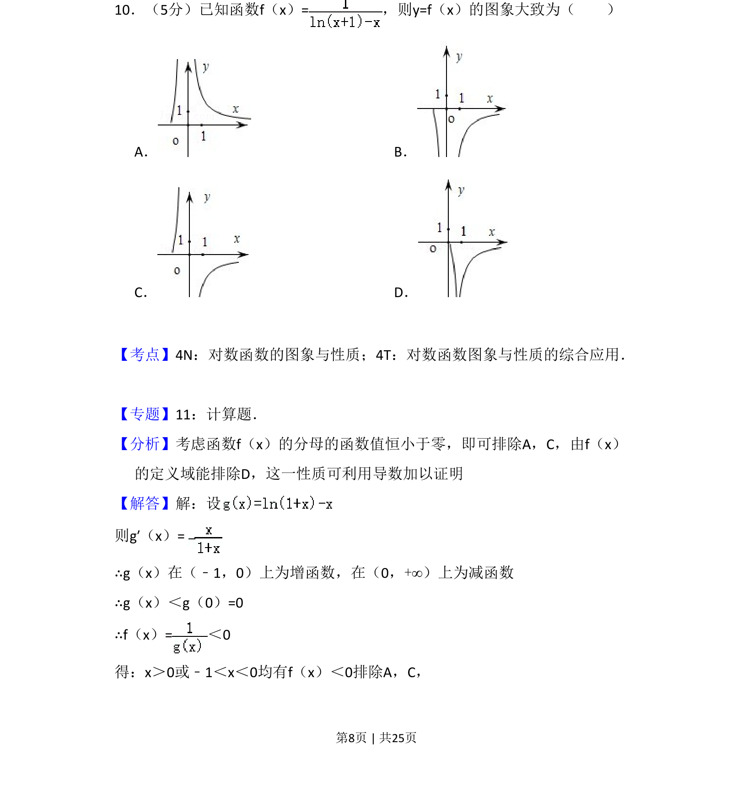
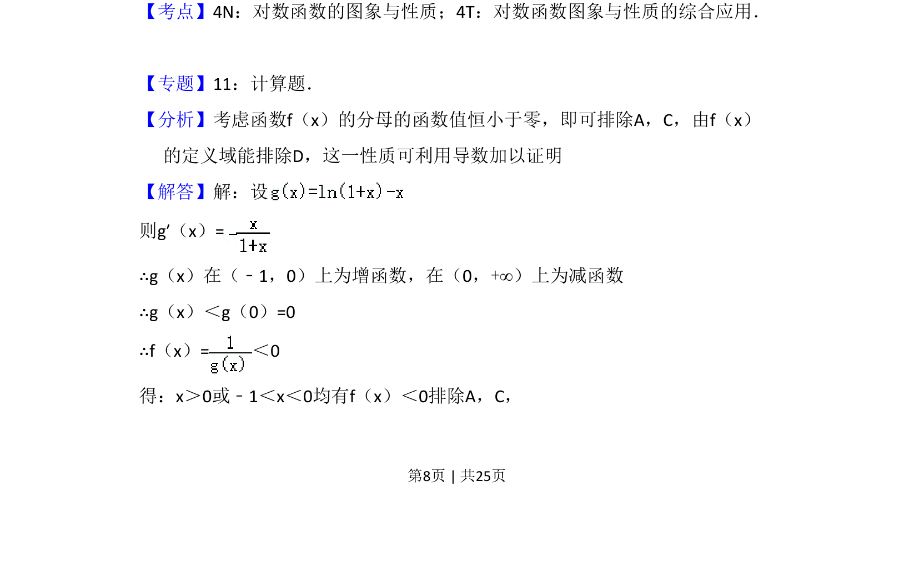
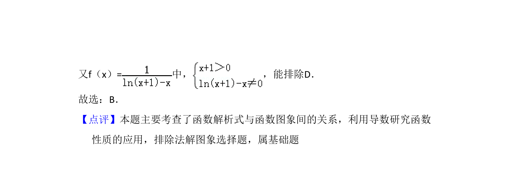

考点：对数函数的图象与性质 函数图象的判断 利用导数研究函数的单调性

本题通过分析函数分母的值域及定义域，结合导数研究函数性质，利用排除法判断函数图象


📄 原 PDF 第 8 页：
素材/真题/吉林/2008-2024·（吉林）数学高考真题/2012年高考数学试卷（理）（新课标）（解析卷）.pdf
10．（5分）已知函数f（x）=，则y=f（x）的图象大致为（ ） A．B． C．D．
【考点】4N：对数函数的图象与性质；4T：对数函数图象与性质的综合应用．菁优网版权 所有 【专题】11：计算题． 【分析】考虑函数f（x）的分母的函数值恒小于零，即可排除A，C，由f（x） 的定义域能排除D，这一性质可利用导数加以证明 【解答】解：设 则g′（x）= ∴g（x）在（﹣1，0）上为增函数，在（0，+∞）上为减函数 ∴g（x）＜g（0）=0 ∴f（x）=＜0 得：x＞0或﹣1＜x＜0均有f（x）＜0排除A，C，